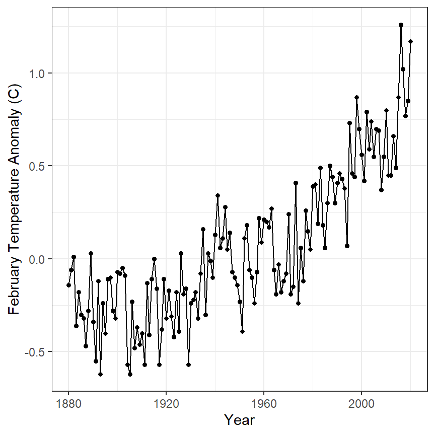
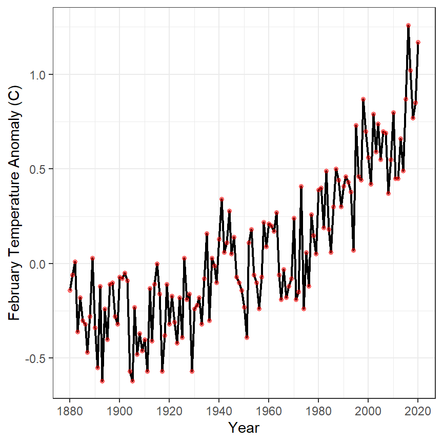
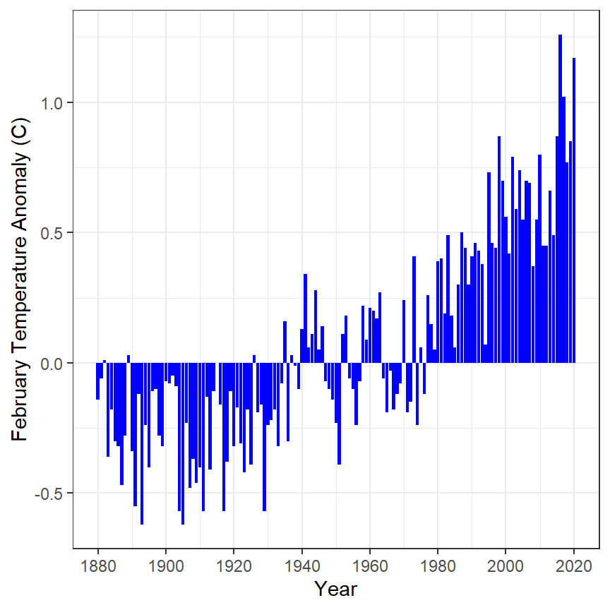
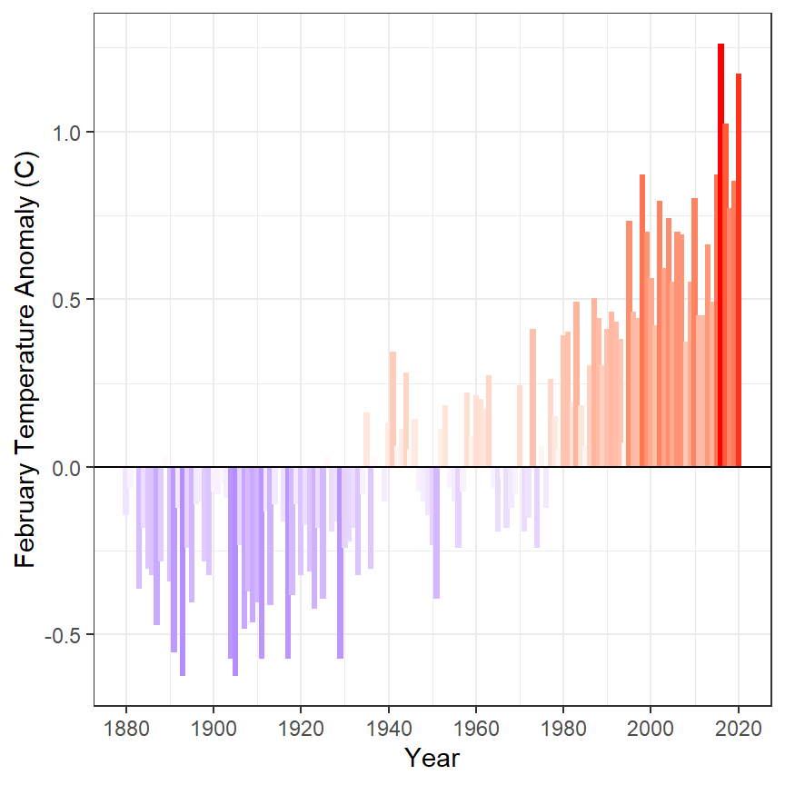

Background
 The National Oceanic and Atmospheric Administration (NOAA) maintains a database of global land and sea temperatures. The data can be accessed from their Climate at a Glance website. Their default settings show the global temperature anomaly (difference from a long-term average) for February and are in this CSV file. The data file is loaded into R below, but note that
The National Oceanic and Atmospheric Administration (NOAA) maintains a database of global land and sea temperatures. The data can be accessed from their Climate at a Glance website. Their default settings show the global temperature anomaly (difference from a long-term average) for February and are in this CSV file. The data file is loaded into R below, but note that skip=4 is need as the first four lines of the CSV file do not contain data.
#!# Set to your own working directory and have just your filename below.
gt <- read.csv("https://www.ncdc.noaa.gov/cag/global/time-series/globe/land_ocean/1/2/1880-2020/data.csv",skip=4)
str(gt)
Annual Temperature Anomaly 1
Construct ggplot2 code to match the graph below (as closely as you can).

Annual Temperature Anomaly 2
Construct ggplot2 code to match the graph below (as closely as you can). [HINT: Copy and then modify the code you constructed from above.]

Annual Temperature Anomaly 3
Construct ggplot2 code to match the graph below (as closely as you can).

BONUS – Annual Temperature Anomaly 4
Perform an internet search to determine how to add a solid black horizontal line at 0 to each of the graphs above (see the line in the graph in the next section).
BONUS – Annual Temperature Anomaly 5
Construct ggplot2 code to match the graph below (as closely as you can).

BONUS – Annual Temperature Anomaly 6
Construct ggplot2 code to match the graph below (as closely as you can).
